| Market | Asset A | Asset B | Asset C | Volume | |
|---|---|---|---|---|---|
| Date | |||||
| 2021-01-01 | 0.004161 | 0.004692 | 0.005241 | -0.016105 | 169774.447404 |
| 2021-01-04 | 0.008638 | 0.013114 | 0.001701 | -0.019054 | 329754.607698 |
| 2021-01-05 | -0.000214 | -0.006454 | 0.008921 | -0.017314 | 164879.373570 |
| 2021-01-06 | 0.007277 | 0.012039 | 0.001343 | 0.004260 | 190228.897875 |
| 2021-01-07 | 0.005960 | 0.000440 | 0.005903 | -0.013105 | 119450.314996 |
Data Analytics & Visualization
Exploratory Data Analysis
Victor Henriques, Ph.D.
Introduction
Why EDA?
Exploratory Data Analysis turns observations into questions, structure, and evidence.
EDA combines:
- numerical summaries;
- visual displays;
- data-quality checks;
- transformations and comparisons;
- iterative refinement of questions.
Descriptive versus inferential statistics
Descriptive
Describe the observations available:
- center;
- spread;
- shape;
- relationships;
- unusual values.
Inferential
Use a sample to reason about a population:
- estimation;
- uncertainty;
- hypothesis tests;
- prediction.
A descriptive statistic is not automatically an estimate with quantified uncertainty.
Four descriptive questions
- Position: Where is the distribution located?
- Dispersion: How widely are observations spread?
- Shape: How is mass distributed around the center and into the tails?
- Bivariate structure: How do two variables vary together?
Learning objectives
By the end of the lecture, students will be able to:
- compute and interpret measures of position, dispersion, and shape;
- distinguish population parameters from sample statistics;
- explain estimator conventions such as
ddof, quantile method, and excess kurtosis; - select a visualization that matches the descriptive question;
- diagnose sensitivity to skewness, multimodality, and outliers;
- interpret covariance and Pearson, Spearman, and Kendall association;
- avoid common descriptive-statistics and visualization errors.
A self-contained financial dataset
<class 'pandas.core.frame.DataFrame'>
DatetimeIndex: 1250 entries, 2021-01-01 to 2025-10-16
Freq: B
Data columns (total 5 columns):
# Column Non-Null Count Dtype
--- ------ -------------- -----
0 Market 1250 non-null float64
1 Asset A 1250 non-null float64
2 Asset B 1250 non-null float64
3 Asset C 1250 non-null float64
4 Volume 1250 non-null float64
dtypes: float64(5)
memory usage: 58.6 KBFirst visual inspection
fig, axes = plt.subplots(2, 1, sharex=True)
axes[0].plot(returns_pct.index, returns_pct["Market"], linewidth=.7, color="#0072B2")
axes[0].set(title="Synthetic market returns", ylabel="Return (%)")
axes[1].plot(returns.index, returns["Volume"], linewidth=.7, color="#D55E00")
axes[1].set(xlabel="Date", ylabel="Volume")
plt.tight_layout()
plt.show()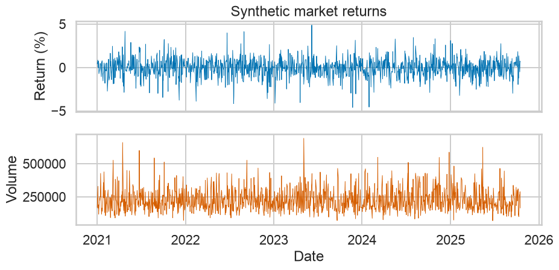
Data-quality checklist
- correct unit of observation;
- variable definitions and units;
- missingness and duplicated rows;
- impossible or invalid values;
- temporal ordering and gaps;
- categorical consistency;
- measurement precision;
- transformations already applied.
Measures of Position
What is “typical”?
Different definitions of typical answer different questions:
- balance point: mean;
- middle ordered observation: median;
- most frequent observed value: mode;
- threshold below which proportion
plies: quantile; - compounded growth rate: geometric mean.
Arithmetic mean
For observations \(x_1,\ldots,x_n\), the sample mean is
\[\bar{x}=\frac{1}{n}\sum_{i=1}^{n}x_i.\]
Mean and outlier sensitivity
base = np.array([8, 9, 10, 10, 11, 12], dtype=float)
contaminated = np.append(base, 60)
pd.DataFrame({
"sample": ["base", "with extreme value"],
"mean": [base.mean(), contaminated.mean()],
"median": [np.median(base), np.median(contaminated)],
})| sample | mean | median | |
|---|---|---|---|
| 0 | base | 10.000000 | 10.0 |
| 1 | with extreme value | 17.142857 | 10.0 |
Median
For ordered observations \(x_{(1)}\leq\cdots\leq x_{(n)}\), one conventional sample median is
\[\widetilde{x}=\begin{cases} x_{((n+1)/2)}, & n\text{ odd},\\ \frac{x_{(n/2)}+x_{(n/2+1)}}{2}, & n\text{ even}. \end{cases}\]
Mode
For a discrete variable with probability mass function \(p(x)=P(X=x)\), a population mode is
\[\operatorname{Mode}(X)\in\arg\max_x p(x)\]
Quantiles: population definition
Let the cumulative distribution function be \(F(x)=P(X\leq x)\). A left quantile is
\[Q(p)=\inf\{x\in\mathbb{R}:F(x)\geq p\},\qquad 0<p<1\]
The empirical CDF is
\[\widehat{F}_n(x)=\frac{1}{n}\sum_{i=1}^{n}\mathbf{1}\{x_i\leq x\}\]
and its generalized inverse defines the empirical quantile.
Quantiles in Python
Quantile estimator conventions
small = np.array([1, 2, 4, 8, 16])
methods = ["inverted_cdf", "closest_observation", "linear", "median_unbiased"]
pd.Series({m: np.quantile(small, .25, method=m) for m in methods}, name="Q1")inverted_cdf 2.000000
closest_observation 1.000000
linear 2.000000
median_unbiased 1.666667
Name: Q1, dtype: float64Geometric mean and compounded growth
For strictly positive values \(x_i>0\),
\[G=\left(\prod_{i=1}^{n}x_i\right)^{1/n} =\exp\left(\frac{1}{n}\sum_{i=1}^{n}\log x_i\right)\]
For simple returns \(r_i>-1\), the constant compounded return is
\[\bar r_G=\left(\prod_{i=1}^{n}(1+r_i)\right)^{1/n}-1\]
Position: visual comparison
x = returns_pct["Asset A"]
fig, ax = plt.subplots()
sns.histplot(x, bins=45, stat="density", color="#56B4E9", alpha=.5, ax=ax)
sns.kdeplot(x, color="#0072B2", linewidth=2, ax=ax)
ax.axvline(x.mean(), color="#D55E00", linewidth=2, label=f"Mean = {x.mean():.2f}")
ax.axvline(x.median(), color="#009E73", linewidth=2, label=f"Median = {x.median():.2f}")
ax.set(title="Position depends on the chosen notion of center", xlabel="Daily return (%)", ylabel="Density")
ax.legend(frameon=False)
plt.tight_layout()
plt.show()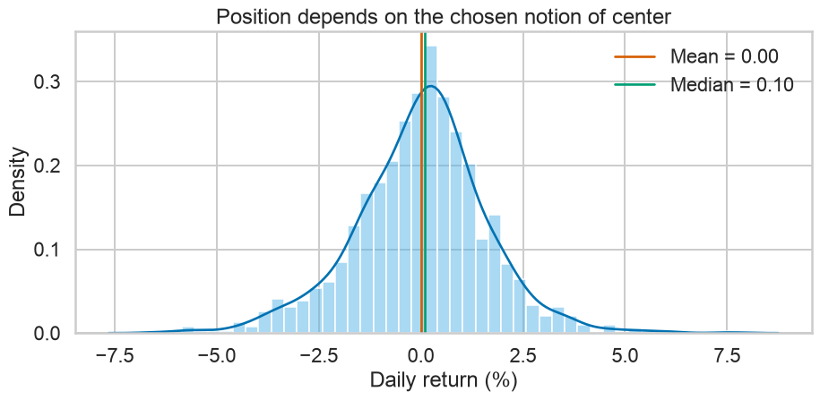
Measures of Dispersion
Why spread matters
Two datasets can have the same mean and radically different uncertainty, heterogeneity, or risk.
Measures of dispersion answer:
- how far observations lie from a center;
- how wide the central mass is;
- how strongly extremes influence the scale;
- whether groups are comparably stable.
Range
\[R=x_{(n)}-x_{(1)}=\max_i x_i-\min_i x_i\]
Interquartile range
\[\operatorname{IQR}=Q(0.75)-Q(0.25)=Q_3-Q_1\]
The IQR measures the width of the central 50% and is more resistant to extremes than the range.
Boxplot fences are rules, not proofs
Tukey-style inner fences are
\[ L=Q_1-1.5\operatorname{IQR},\qquad U=Q_3+1.5\operatorname{IQR}. \]
Values beyond the fences are flagged observations, not automatically errors.
Population and sample variance
Population variance is
\[ \sigma^2=\operatorname{Var}(X)=\mathbb{E}\left[(X-\mu)^2\right]. \]
Given a sample, the unbiased sample variance under iid sampling with finite variance is
\[ s^2=\frac{1}{n-1}\sum_{i=1}^{n}(x_i-\bar{x})^2. \]
Why divide by n - 1?
The deviations from the sample mean satisfy
\[ \sum_{i=1}^{n}(x_i-\bar{x})=0, \]
so only \(n-1\) deviations are free. The adjustment also makes
\[ \mathbb{E}[s^2]=\sigma^2 \]
under iid sampling from a distribution with finite variance.
Standard deviation
\[ s=\sqrt{s^2}=\sqrt{\frac{1}{n-1}\sum_{i=1}^{n}(x_i-\bar{x})^2}. \]
Standard deviation has the same physical unit as the observations.
Mean absolute deviation about a center
About the mean:
\[ \operatorname{MAD}_{\bar{x}}=\frac{1}{n}\sum_{i=1}^{n}|x_i-\bar{x}|. \]
Median absolute deviation:
\[\operatorname{MAD}=\operatorname{median}_i\left|x_i-\widetilde{x}\right|\]
x = returns_pct["Market"]
mean_ad = np.mean(np.abs(x - x.mean()))
median_ad = stats.median_abs_deviation(x, scale=1)
normal_consistent_mad = stats.median_abs_deviation(x, scale="normal")
mean_ad, median_ad, normal_consistent_mad(np.float64(0.8137265955371538),
np.float64(0.6239238299835972),
np.float64(0.9250308545121932))Coefficient of variation
For a variable with nonzero mean,
\[ \operatorname{CV}=\frac{s}{|\bar{x}|}. \]
CV is dimensionless, but it is inappropriate when:
- zero is arbitrary rather than meaningful;
- the mean is close to zero;
- values can change sign in a way that destroys interpretation.
Comparing dispersion measures
def dispersion_summary(s):
q1, q3 = s.quantile([.25, .75])
return pd.Series({
"range": s.max() - s.min(),
"IQR": q3 - q1,
"variance": s.var(ddof=1),
"std": s.std(ddof=1),
"MAD": stats.median_abs_deviation(s, scale="normal"),
})
returns_pct.apply(dispersion_summary).T.round(3)| range | IQR | variance | std | MAD | |
|---|---|---|---|---|---|
| Market | 9.494 | 1.228 | 1.203 | 1.097 | 0.925 |
| Asset A | 14.063 | 1.864 | 2.614 | 1.617 | 1.382 |
| Asset B | 5.817 | 1.066 | 0.688 | 0.830 | 0.786 |
| Asset C | 6.999 | 1.468 | 1.178 | 1.085 | 1.086 |
Boxplot anatomy
long_returns = returns_pct.melt(var_name="Series", value_name="Return")
fig, ax = plt.subplots()
sns.boxplot(data=long_returns, x="Series", y="Return", hue="Series", palette="colorblind", legend=False, ax=ax)
ax.set(title="Comparative boxplots", xlabel="", ylabel="Daily return (%)")
plt.tight_layout()
plt.show()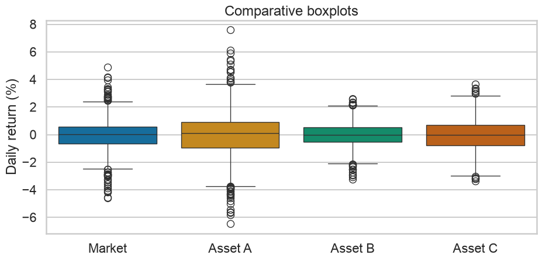
Violin plus boxplot
fig, ax = plt.subplots()
sns.violinplot(data=long_returns, x="Series", y="Return", inner=None, cut=0, color="#A6CEE3", ax=ax)
sns.boxplot(data=long_returns, x="Series", y="Return", width=.18, showfliers=False,
color="white", ax=ax)
ax.set(title="Density shape plus robust positional summary", xlabel="", ylabel="Daily return (%)")
plt.tight_layout()
plt.show()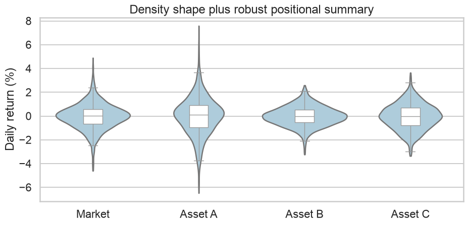
Measures of Shape
Shape is more than “normal or not”
Shape includes:
- symmetry or asymmetry;
- number of modes;
- tail weight;
- gaps and truncation;
- discreteness and heaping;
- contamination or mixtures.
Central moments
For a population with mean \(\mu\), the \(r\)th central moment is
\[ \mu_r=\mathbb{E}[(X-\mu)^r]. \]
The biased sample central moment is
\[ m_r=\frac{1}{n}\sum_{i=1}^{n}(x_i-\bar{x})^r. \]
- \(m_2\): scale;
- \(m_3\): asymmetry;
- \(m_4\): tail-sensitive shape.
Skewness
The moment coefficient is
\[ g_1=\frac{m_3}{m_2^{3/2}}. \]
A common bias-adjusted Fisher-Pearson coefficient is
\[ G_1=\frac{\sqrt{n(n-1)}}{n-2}g_1,\qquad n>2. \]
Skewness: visual examples
samples = {
"Left-skewed": -rng.lognormal(0, .55, 3000),
"Symmetric": rng.normal(0, 1, 3000),
"Right-skewed": rng.lognormal(0, .55, 3000),
}
fig, axes = plt.subplots(1, 3, sharey=True)
for ax, (label, values) in zip(axes, samples.items()):
sns.histplot(values, bins=45, stat="density", color="#56B4E9", ax=ax)
ax.set_title(f"{label}\nskew = {stats.skew(values, bias=False):.2f}")
ax.set_xlabel("")
plt.tight_layout()
plt.show()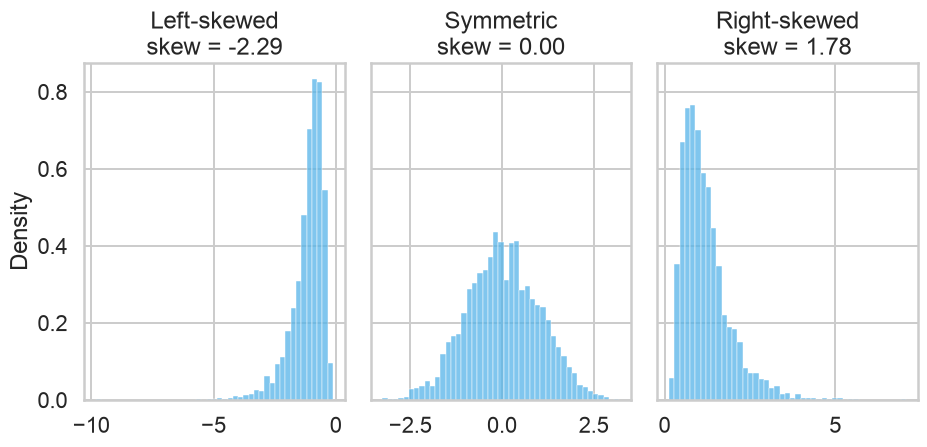
Kurtosis and excess kurtosis
Pearson kurtosis is
\[ \beta_2=\frac{\mu_4}{\mu_2^2}. \]
Excess kurtosis is
\[ \gamma_2=\beta_2-3. \]
Thus a normal distribution has Pearson kurtosis 3 and excess kurtosis 0.
Kurtosis is tail-sensitive
shape_samples = {
"Uniform": rng.uniform(-np.sqrt(3), np.sqrt(3), 5000),
"Normal": rng.normal(0, 1, 5000),
"Student t (df=5)": rng.standard_t(5, 5000) / np.sqrt(5/3),
}
fig, axes = plt.subplots(1, 3, sharex=True, sharey=True)
for ax, (label, values) in zip(axes, shape_samples.items()):
sns.kdeplot(values, fill=False, cut=0, color="#0072B2", ax=ax)
ax.set_title(f"{label}\nexcess k = {stats.kurtosis(values, bias=False):.2f}")
ax.set_xlim(-5, 5)
plt.tight_layout()
plt.show()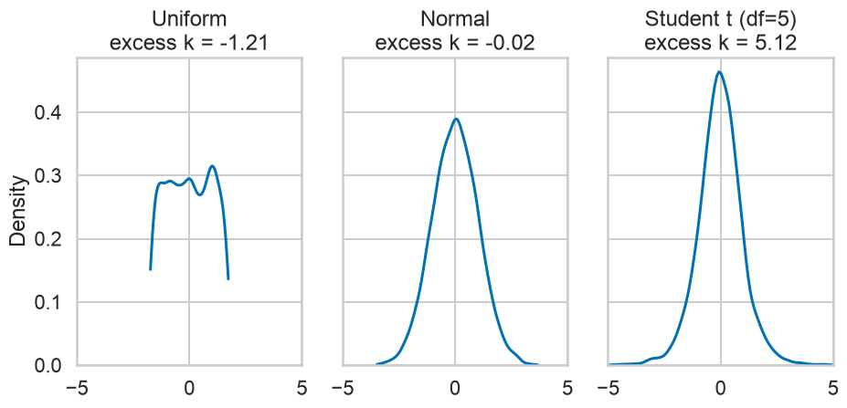
Histogram: useful and fragile
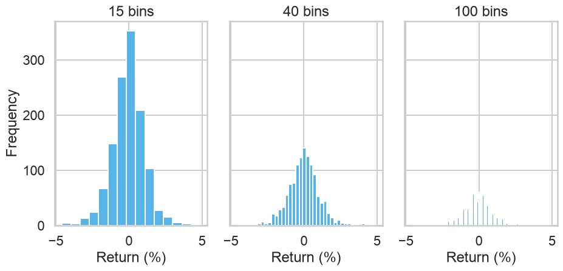
Empirical cumulative distribution function
\[ \widehat F_n(x)=\frac{1}{n}\sum_{i=1}^{n}\mathbf{1}\{x_i\le x\}. \]
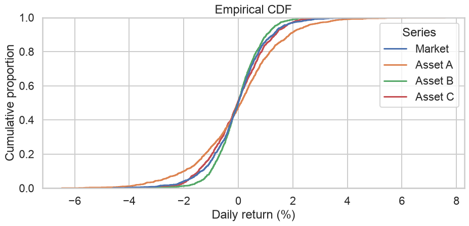
Q-Q plot
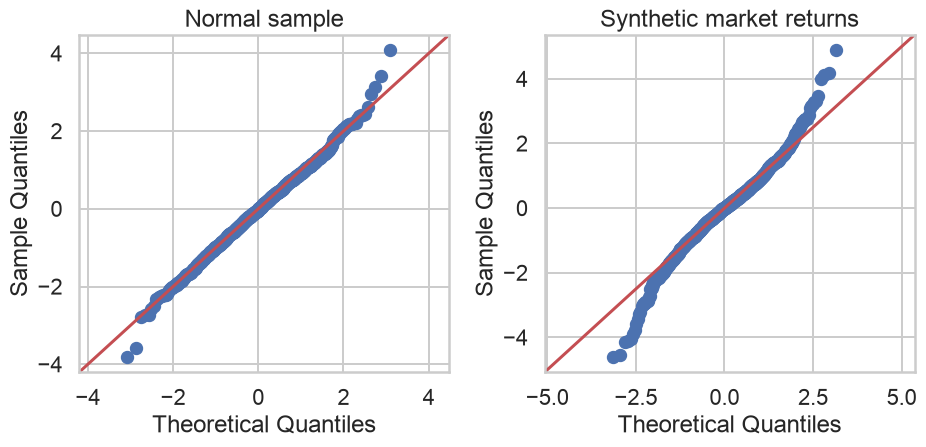
Multimodality can defeat moment summaries
a = rng.normal(-2, 1, 2500)
b = rng.normal(2, 1, 2500)
mixture = np.concatenate([a, b])
normal_match = rng.normal(mixture.mean(), mixture.std(ddof=1), len(mixture))
fig, ax = plt.subplots()
sns.kdeplot(mixture, label="Bimodal mixture", linewidth=2, color="#0072B2", ax=ax)
sns.kdeplot(normal_match, label="Normal with matching mean and SD", linewidth=2, color="#D55E00", ax=ax)
ax.set(title="Same center and scale do not imply the same shape", xlabel="Value", ylabel="Density")
ax.legend(frameon=False)
plt.tight_layout()
plt.show()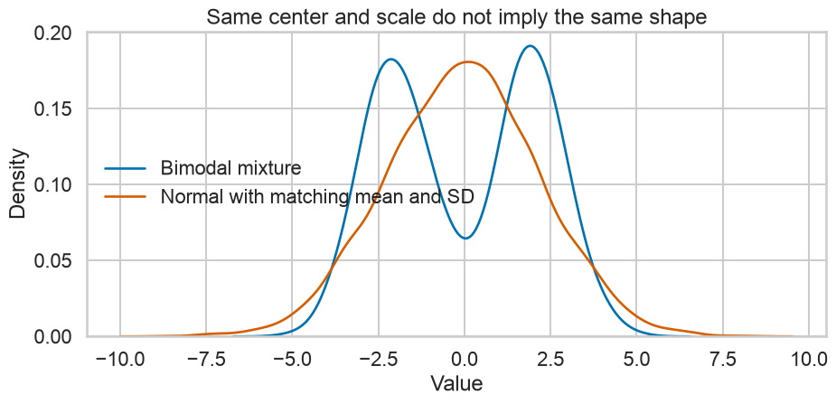
Bivariate Measures
Bivariate questions
- Do two variables move together?
- Is the relationship positive or negative?
- Is it linear, monotonic, nonlinear, or grouped?
- Is the relationship driven by a small number of observations?
- Does the relationship change across subgroups or time?
Population and sample covariance
Population covariance is
\[ \operatorname{Cov}(X,Y)=\mathbb{E}[(X-\mu_X)(Y-\mu_Y)]. \]
Sample covariance is
\[ s_{XY}=\frac{1}{n-1}\sum_{i=1}^{n}(x_i-\bar{x})(y_i-\bar{y}). \]
Covariance matrix
For a random vector \(\mathbf X\in\mathbb R^p\),
\[ \boldsymbol\Sigma=\mathbb E[(\mathbf X-\boldsymbol\mu)(\mathbf X-\boldsymbol\mu)^\top]. \]
Its diagonal contains variances; off-diagonal entries contain covariances.
Pearson correlation
\[ \rho_{XY}=\frac{\operatorname{Cov}(X,Y)}{\sigma_X\sigma_Y}, \qquad r_{XY}=\frac{s_{XY}}{s_Xs_Y}. \]
For nonconstant variables, \(-1\le r_{XY}\le1\).
Scatterplot first, coefficient second
fig, ax = plt.subplots()
sns.scatterplot(data=returns_pct, x="Market", y="Asset A", alpha=.4, s=22, ax=ax)
sns.regplot(data=returns_pct, x="Market", y="Asset A", scatter=False, ci=None,
color="#D55E00", ax=ax)
r = returns_pct["Market"].corr(returns_pct["Asset A"])
ax.set(title=f"Market and Asset A: Pearson r = {r:.2f}", xlabel="Market return (%)", ylabel="Asset A return (%)")
plt.tight_layout()
plt.show()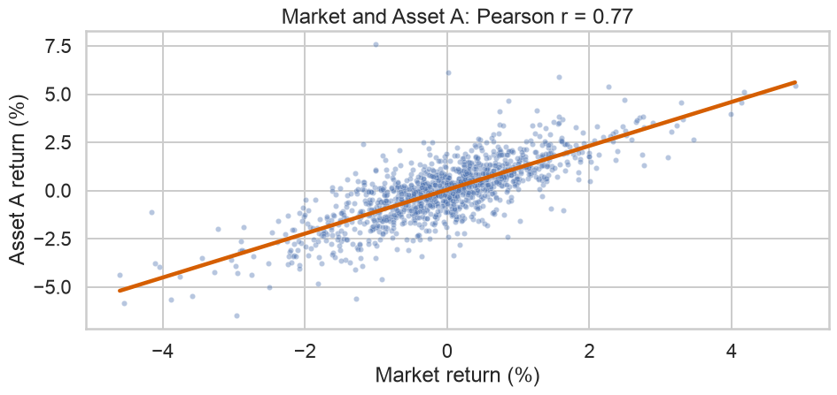
Correlation is invariant to positive rescaling
Pearson can miss nonlinear association
x_nonlin = rng.uniform(-2, 2, 1000)
y_nonlin = x_nonlin**2 + rng.normal(0, .25, 1000)
fig, ax = plt.subplots()
ax.scatter(x_nonlin, y_nonlin, alpha=.35, s=18)
ax.set(title=f"Strong nonlinear structure, Pearson r = {np.corrcoef(x_nonlin, y_nonlin)[0,1]:.2f}",
xlabel="x", ylabel="y")
plt.tight_layout()
plt.show()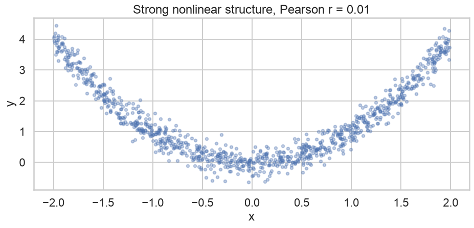
Correlation matrix heatmap
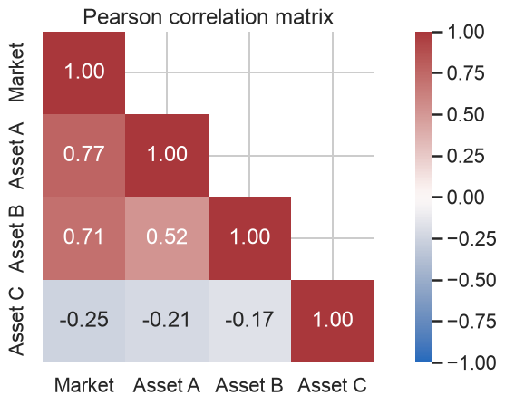
Pairwise visualization
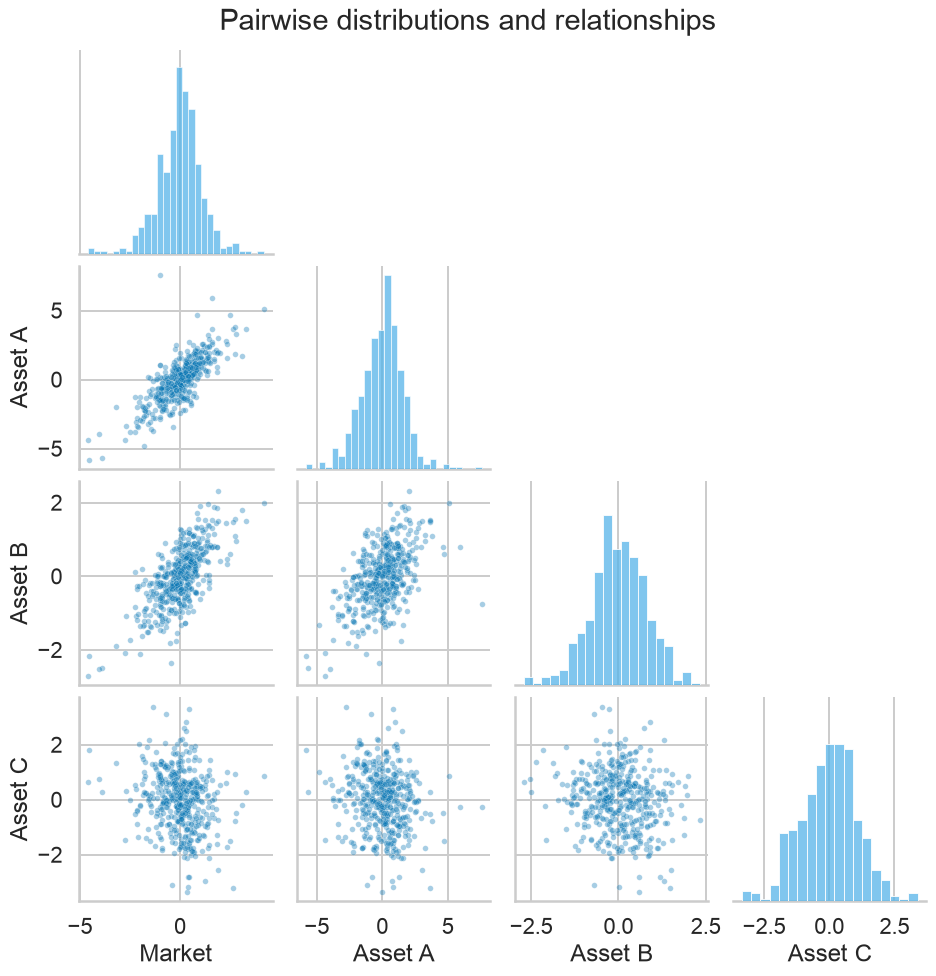
Overplotting: use density or hexagonal bins
fig, axes = plt.subplots(1, 2)
axes[0].scatter(returns_pct["Market"], returns_pct["Asset A"], alpha=.15, s=12)
axes[0].set(title="Transparent points", xlabel="Market (%)", ylabel="Asset A (%)")
hb = axes[1].hexbin(returns_pct["Market"], returns_pct["Asset A"], gridsize=35, cmap="viridis", mincnt=1)
axes[1].set(title="Hexagonal counts", xlabel="Market (%)", ylabel="Asset A (%)")
fig.colorbar(hb, ax=axes[1], label="Count")
plt.tight_layout()
plt.show()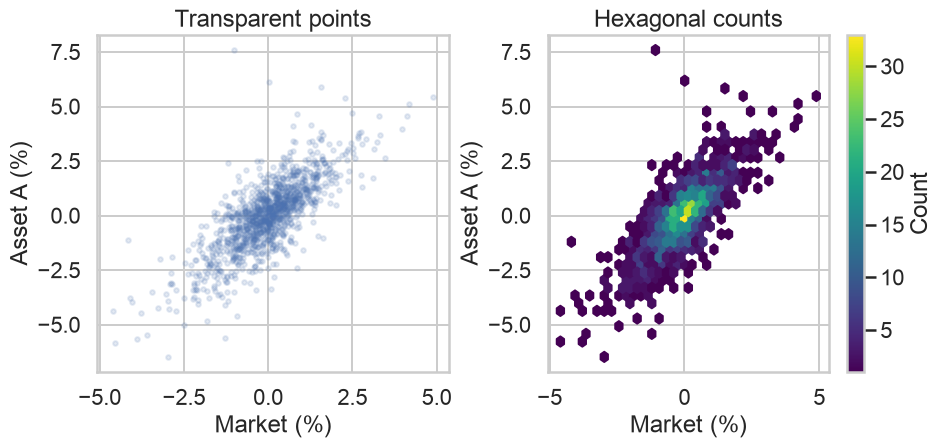
Group structure can distort aggregate relationships
n_group = 120
x1 = rng.normal(2, .7, n_group); y1 = -x1 + 6 + rng.normal(0, .35, n_group)
x2 = rng.normal(6, .7, n_group); y2 = -x2 + 14 + rng.normal(0, .35, n_group)
groups = pd.DataFrame({"x": np.r_[x1, x2], "y": np.r_[y1, y2],
"group": ["Group 1"]*n_group + ["Group 2"]*n_group})
fig, ax = plt.subplots()
sns.scatterplot(data=groups, x="x", y="y", hue="group", ax=ax)
sns.regplot(data=groups, x="x", y="y", scatter=False, ci=None, color="black", ax=ax)
ax.set(title="Aggregate and within-group relationships can differ")
plt.tight_layout()
plt.show()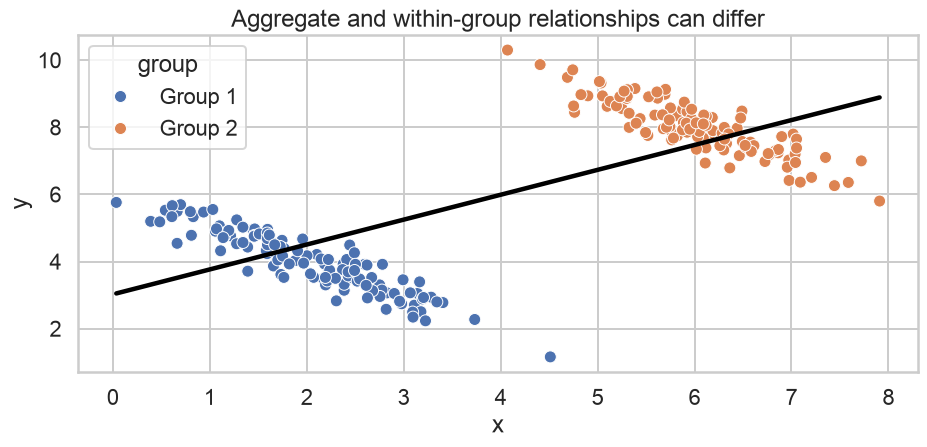
Integrated EDA
A descriptive-statistics table
def descriptive_table(df):
out = pd.DataFrame(index=df.columns)
out["n"] = df.count()
out["missing"] = df.isna().sum()
out["mean"] = df.mean()
out["median"] = df.median()
out["std"] = df.std(ddof=1)
out["Q1"] = df.quantile(.25)
out["Q3"] = df.quantile(.75)
out["IQR"] = out["Q3"] - out["Q1"]
out["min"] = df.min()
out["max"] = df.max()
out["skew"] = df.apply(lambda s: stats.skew(s.dropna(), bias=False))
out["excess_kurtosis"] = df.apply(lambda s: stats.kurtosis(s.dropna(), fisher=True, bias=False))
return out
descriptive_table(returns_pct).round(3)| n | missing | mean | median | std | Q1 | Q3 | IQR | min | max | skew | excess_kurtosis | |
|---|---|---|---|---|---|---|---|---|---|---|---|---|
| Market | 1250 | 0 | -0.034 | 0.003 | 1.097 | -0.652 | 0.576 | 1.228 | -4.603 | 4.891 | -0.116 | 1.805 |
| Asset A | 1250 | 0 | 0.002 | 0.096 | 1.617 | -0.946 | 0.917 | 1.864 | -6.476 | 7.587 | -0.100 | 1.366 |
| Asset B | 1250 | 0 | -0.008 | -0.005 | 0.830 | -0.543 | 0.523 | 1.066 | -3.234 | 2.584 | -0.066 | 0.550 |
| Asset C | 1250 | 0 | -0.044 | -0.028 | 1.085 | -0.779 | 0.690 | 1.468 | -3.355 | 3.644 | -0.011 | 0.042 |
One variable, four complementary views
x = returns_pct["Market"]
fig, axes = plt.subplots(2, 2)
sns.histplot(x, bins=40, kde=True, color="#56B4E9", ax=axes[0,0])
axes[0,0].set(title="Histogram + KDE", xlabel="Return (%)")
sns.boxplot(x=x, orient="h", color="#56B4E9", ax=axes[0,1])
axes[0,1].set(title="Boxplot", xlabel="Return (%)")
sns.ecdfplot(x=x, color="#0072B2", ax=axes[1,0])
axes[1,0].set(title="ECDF", xlabel="Return (%)", ylabel="Cumulative proportion")
qqplot(x, line="45", ax=axes[1,1])
axes[1,1].set_title("Normal Q-Q plot")
plt.tight_layout()
plt.show()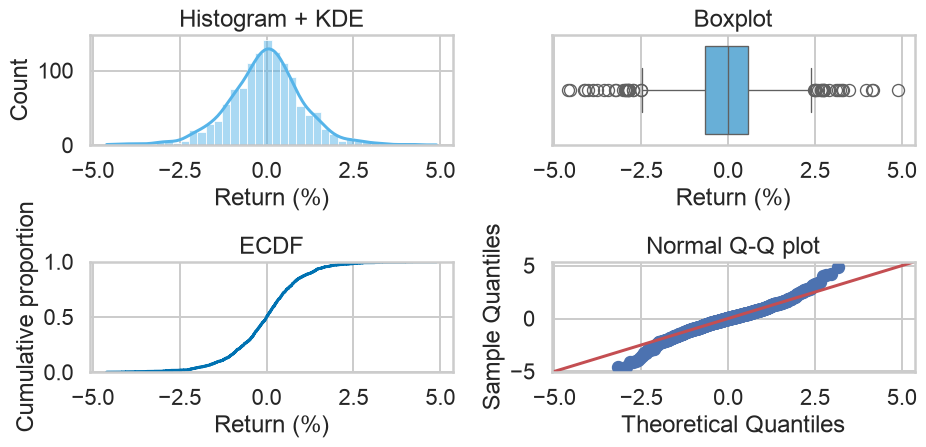
Outlier sensitivity experiment
clean = rng.normal(0, 1, 300)
contaminated = np.r_[clean, 12]
comparison = pd.DataFrame({
"Statistic": ["Mean", "Median", "SD", "IQR", "Skewness", "Excess kurtosis"],
"Clean": [np.mean(clean), np.median(clean), np.std(clean, ddof=1), stats.iqr(clean),
stats.skew(clean, bias=False), stats.kurtosis(clean, bias=False)],
"Contaminated": [np.mean(contaminated), np.median(contaminated), np.std(contaminated, ddof=1),
stats.iqr(contaminated), stats.skew(contaminated, bias=False),
stats.kurtosis(contaminated, bias=False)],
})
comparison.round(3)| Statistic | Clean | Contaminated | |
|---|---|---|---|
| 0 | Mean | -0.039 | 0.001 |
| 1 | Median | -0.039 | -0.031 |
| 2 | SD | 1.033 | 1.243 |
| 3 | IQR | 1.434 | 1.439 |
| 4 | Skewness | 0.227 | 3.080 |
| 5 | Excess kurtosis | 0.247 | 28.033 |
Missing values and denominators
missing_demo = returns_pct[["Market", "Asset A"]].copy()
missing_demo.loc[missing_demo.sample(100, random_state=1).index, "Asset A"] = np.nan
pd.DataFrame({
"count": missing_demo.count(),
"mean": missing_demo.mean(),
"std": missing_demo.std(),
})| count | mean | std | |
|---|---|---|---|
| Market | 1250 | -0.034259 | 1.096869 |
| Asset A | 1150 | -0.004932 | 1.620854 |
Transformations change interpretation
raw_volume = returns["Volume"]
log_volume = np.log(raw_volume)
fig, axes = plt.subplots(1, 2)
sns.histplot(raw_volume, bins=40, color="#56B4E9", ax=axes[0])
axes[0].set(title="Volume", xlabel="Raw units")
sns.histplot(log_volume, bins=40, color="#009E73", ax=axes[1])
axes[1].set(title="Log volume", xlabel="log(Volume)")
plt.tight_layout()
plt.show()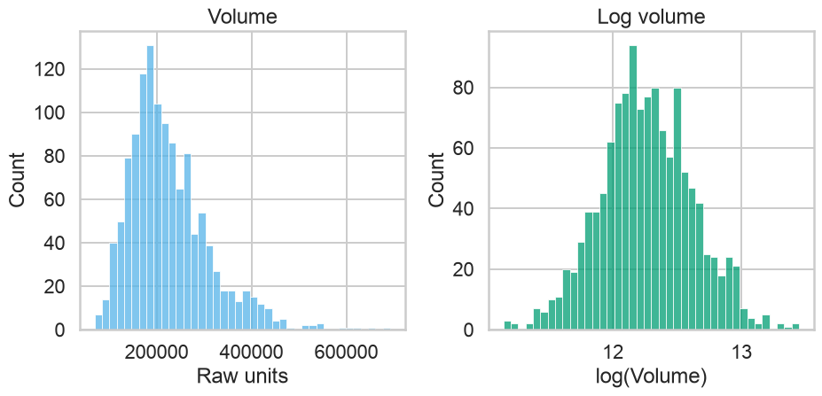
EDA is iterative
After each graph or statistic, ask:
- What feature did the display reveal?
- Is the feature real, constructed, or an artifact of scale or method?
- Which subgroup, time window, or variable should be inspected next?
- What assumption became questionable?
- Which alternative summary would challenge the current interpretation?
Common Errors
Descriptive-statistics failure modes
- reporting mean without shape or sample size;
- calling every extreme observation an error;
- omitting quantile estimator conventions when exact replication matters;
- confusing population and sample denominators;
- reporting kurtosis without saying Pearson or excess;
- treating correlation as causation or independence;
- trusting a correlation matrix without scatterplots;
- comparing histograms with different bins or scales;
- ignoring missing-data denominators;
- presenting smoothed density as raw observation frequency.
Graph selection guide
| Question | Primary display | Complement |
|---|---|---|
| Where is the center? | histogram/ECDF | mean and median |
| How dispersed? | box/violin | SD, IQR, MAD |
| Tail behavior? | ECDF/Q-Q | quantiles, kurtosis |
| Multiple modes? | histogram/KDE | subgroup analysis |
| Group comparison? | shared-scale box/violin | grouped table |
| Linear association? | scatterplot | Pearson correlation |
| Monotonic association? | scatterplot of ranks | Spearman/Kendall |
| Many variables? | pairplot/heatmap | selected scatterplots |
Practice
Capstone exercise
Using returns, create an EDA report that:
- defines the unit of observation and units;
- audits completeness and validity;
- compares mean, median, and selected quantiles;
- compares range, IQR, SD, and MAD;
- reports adjusted skewness and excess kurtosis;
- produces histogram, ECDF, boxplot, and Q-Q plot;
- compares assets using shared scales;
- examines covariance and three forms of correlation;
- uses scatterplots to challenge the coefficients;
- states limitations and next analytical questions.
Suggested assessment rubric
| Dimension | Evidence |
|---|---|
| Definitions | formulas and conventions are precise |
| Computation | code matches the stated estimand |
| Visualization | graph answers a defined question |
| Interpretation | claims stay within descriptive evidence |
| Robustness | sensitivity to extremes and methods is examined |
| Bivariate reasoning | shape is inspected before coefficients |
| Reproducibility | data, seed, units, and parameters are explicit |
Key Takeaways
Descriptive statistics are a system
- Position locates the distribution.
- Dispersion quantifies heterogeneity or scale.
- Shape describes asymmetry, modes, and tails.
- Bivariate measures summarize joint variation.
- Graphics reveal structure that scalar summaries can conceal.
- Robust and classical measures answer different questions.
- Software defaults are methodological choices.
- EDA generates better questions before it generates models.
Final checklist
References
Core references
- Tukey, J. W. Exploratory Data Analysis. Addison-Wesley, 1977.
- NIST/SEMATECH, Exploratory Data Analysis, Engineering Statistics Handbook.
- NumPy documentation,
numpy.quantile. - SciPy documentation,
scipy.stats.skewandscipy.stats.kurtosis. - pandas documentation,
DataFrame.covandDataFrame.corr. - Wilke, C. O. Fundamentals of Data Visualization. O’Reilly, 2019.
- Cleveland, W. S. Visualizing Data. Hobart Press, 1993.

Data Analytics & Visualization